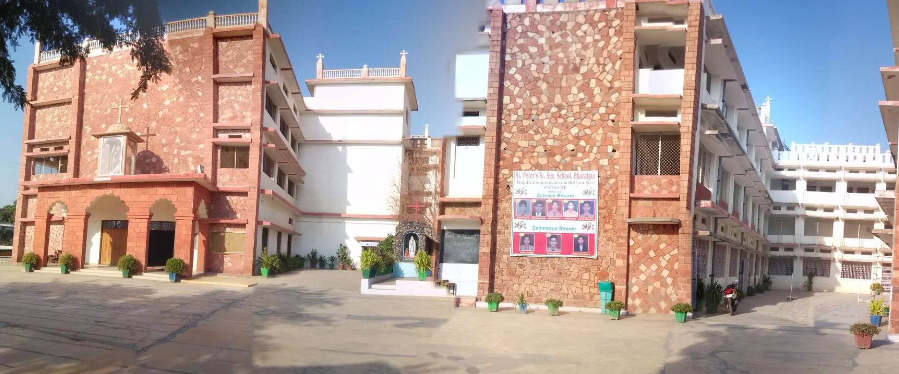

St. Peter’s School, Bharatpur, was established in 1970 under the auspices of the Roman Catholic Archdiocese of Agra, which is dedicated to the provision of education and human development. The school initially opened in 1970 in a rented building in Ranjeet Nagar, with just nine students, one teacher, and two priests. These early pioneers laid the foundation for St. Peter’s School in Bharatpur.
Over the years, the school management, led by Rev. Fr. Thomas Paramundayil, who assumed the role of administrator in 1975, played a pivotal role in shaping the institution’s reputation in the educational landscape of Rajasthan.
Rev. Fr. Thomas Paramundayil’s unwavering efforts led to the acquisition of a substantial 50-acre plot of land in the heart of Bharatpur city in 1977. Under his visionary guidance and supervision, the school’s current building was constructed and relocated to the new premises. The Holy Family congregation of Northern Province, in collaboration with the school, has provided invaluable support and continues to do so to this day.
We express our sincere gratitude for their contributions.
Our Gratitude
St. Peter’s School has experienced steady growth and blossomed into the crown and glory of Bharatpur, with the divine blessing of God Almighty and the unwavering dedication and missionary spirit of all concerned. May God be the guiding destiny that leads us to a successful future and the true evaluator of our efforts to achieve greater heights. We humbly express our sincere gratitude for the blessings and guidance provided by the Archdiocese of Agra, under whose auspices the school operates.
Since 1970, St. Peter’s School has witnessed remarkable growth and has achieved significant milestones.
Affiliation: The school is
affiliated with the Central Board of Secondary Education (CBSE), offering two streams:
Science and Commerce.
Student Population: The school currently has a substantial student body of
2300 students, supported by a dedicated
teaching staff of 80 and administrative personnel.
Campus Amenities: The campus is designed to provide a conducive learning environment. It features
a separate court for basketball, spacious grounds for football, a beautiful garden, a cycle stand, and ample greenery. The classrooms are spacious, well-furnished and equipped with modern facilities. The laboratories are fully equipped with scientific instruments, and the library houses a vast collection of books. The campus also offers a peaceful and conducive study atmosphere.
Technological Integration: The school has implemented the
CampusCare software, an automated system that streamlines various processes, including the admission process, student information management, parent and teacher mobile applications, SMS facility, and online fee payment.